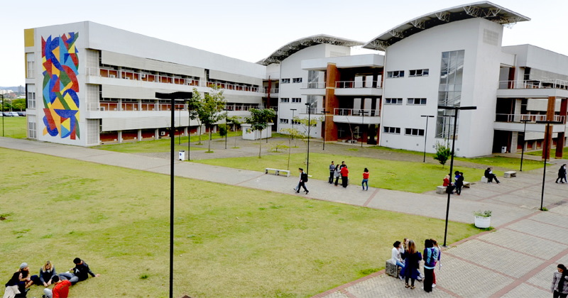
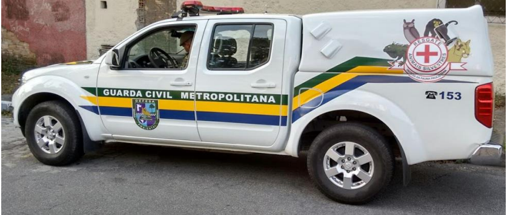
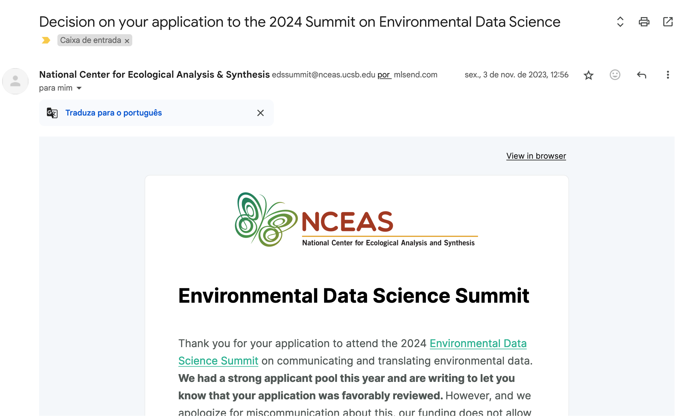

Introdução
Entre os dias 6 e 7 de fevereiro de 2024, participei do evento Environmental Data Science Summit, em Santa Bárbara - Califórnia.
O evento foi organizado pelo National Center for Ecological Analysis and Synthesis (NCEAS), um centro de pesquisa afiliado à Universidade da Califórnia em Santa Bárbara (UCSB).
O objetivo do evento é construir e fomentar a colaboração dentro da comunidade de Ciência de Dados Ambientais.
Como é um termo que não vejo ser usado frequentemente em português, trago a definição apresentada pela organização do evento:
Ciência de Dados Ambientais (Environmental Data Science - EDS) é um campo em crescimento, que utiliza abordagens interdisciplinares para investigar e responder a questões ambientais com ferramentas modernas de ciência de dados. O campo é amplo, diverso e está em expansão.

Para compartilhar as minhas impressões sobre essa experiência, comecei a escrever um texto e ele estava ficando tão grande que decidi dividir em partes. Segue abaixo o que você pode esperar encontrar em cada parte:
Texto 1: Por que era importante para mim participar de um evento sobre Ciência de Dados Ambientais? (esse post!)
Texto 2: Apresentações principais (Keynotes) no EDS Summit 2024 (em breve!)
Texto 3: Atividade em grupo (formato unconference) no EDS Summit 2024 (em breve!)
Texto 4: Momentos de conexão no EDS Summit 2024 (em breve!)
Texto 5: Dicas para quem quer participar do EDS Summit 2025 (em breve!)
Texto 6: Reflexões finais sobre minha participação no EDS Summit 2024 (em breve!)
Quem sou eu?
Se você não me conhece ainda, sou a Beatriz Milz, muito prazer!
Atualmente sou doutoranda em Ciências Ambientais no Instituto de Energia e Ambiente - Universidade de São Paulo (PROCAM/IEE/USP), com o privilégio de ser orientada pelo Prof. Dr. Pedro R. Jacobi, e co-orientada pela Profa. Dra. Sandra Momm, duas pessoas incríveis!
Desde 2018, comecei a estudar programação para análise de dados para utilizar na minha pesquisa. Atualmente também trabalho como professora e consultora na Curso-R, uma empresa de consultoria e treinamentos na área de estatística e ciência de dados.
Eu também gosto bastante de aprender em comunidade: aprender com outras pessoas, e compartilhar coisas que eu já sei! Faço parte da equipe organização da R-Ladies em São Paulo, e também tem várias aulas e palestras disponíveis por aqui (tem coisa desde 2018!).
Por que participar deste evento era importante pra mim?
Eu queria muito ir para me conectar com pessoas que estão na mesma área que eu, conhecer pessoas inspiradoras, e para aprender mais sobre o que está sendo feito na área de Environmental Data Science!
Mas para fazer sentido o motivo de ser tão importante pra mim participar deste evento, é importante contextualizar as minhas experiências nos últimos anos.
A minha formação universitária começou em 2012, quando entrei no curso de Gestão Ambiental da Escola de Artes, Ciências e Humanidades da Universidade de São Paulo (EACH/USP).

Entre 2014 e 2015, fiz um estágio no Núcleo Técnico de Gestão Ambiental, da Secretaria Municipal de Segurança Urbana, da Prefeitura Municipal de São Paulo (NTGA/SMSU/PMSP). No NTGA, eu trabalhei em um projeto relacionado à resgate de animais silvestres vitimados.

Nesse projeto, eu participava ativamente na elaboração de relatórios e mapas, a partir dos dados de ocorrências atendidas pela Guarda Civil Metropolitana Ambiental.
Nessa época, fiz cursos e aprendi bastante na prática sobre Sistemas de Informações Geográficas (SIG), Geoprocessamento, Excel, e como usar o QGIS.
Quando comecei a aprender R em 2018, já com o mestrado finalizado, eu me encantei com o RMarkdown e com a possibilidade de criar relatórios reprodutíveis. Para mim, ficou claro que usar programação para realizar minhas pesquisas era uma forma muito mais rápida e eficiente do que eu estava acostumada. Isso me incentivou a estudar e aprender mais sobre o assunto.
![Dois monstros fofos e redondos vestidos de bruxos, trabalhando juntos para misturar diferentes coisas (código, texto, figuras, etc.) de uma despensa em um caldeirão rotulado "R Markdown". O monstro bruxo no caldeirão está lendo uma receita que inclui os passos "1. Adicionar texto. 2. Adicionar código. 3. Tricotar. 4. (magia) 5. Celebrar a bruxaria percebida." A poção R Markdown então viaja por um tubo, é convertida para markdown por um monstro em uma vassoura com uma varinha mágica, e eventualmente convertida em uma saída pelo pandoc. Texto estilizado (em uma fonte semelhante à de Harry Potter) lê "R Markdown. Texto. Código. Saída. Junte-se, pessoal.](images/rmarkdown-allison.png)
No doutorado, o percurso de cientista ambiental que usava R para análise de dados foi um pouco solitário: não encontrei pessoas no PROCAM com interesses similares, nem disciplinas que me ajudassem a aprofundar nesse caminho. Por isso, eu comecei a buscar disciplinas e eventos, em outros institutos/cursos, que me ajudassem a me aprofundar nesse caminho. Aliás, agradeço ao professor Jonathan Phillips por me aceitar como aluna especial na disciplina “Análise de dados para cientistas sociais”, na FFLCH, em 2020!
Em 2021, participei do Curso de Verão em Ciências Sociais Computacionais (Summer Institute in Computational Social Science - SICSS) (online devido à pandemia). Foi uma experiência incrível, durante 2 semanas, que me ajudou a entender melhor como a ciência de dados pode ser aplicada em outras áreas, e como a colaboração entre áreas pode ser muito enriquecedora. Fui super bem recebida, e aprendi muito com as pessoas que participaram do curso.
Enquanto estava lendo os textos recomendados no SICSS, comecei a pensar: “será que tem algo parecido com isso, mas voltado para a área ambiental?”. Foi aí que descobri o termo Environmental Data Science. Desde então, tenho pesquisado sobre isso, e juntado os links que encontro em um repositório no GitHub.
Um dos links que encontrei foi o do evento “Environmental Data Science Summit”. Fiquei imediatamente interessada, mas quando fui me inscrever (dessa vez para a primeira edição, de 2023), vi que o apoio financeiro para participar do evento era apenas para pessoas que moravam nos EUA.
Certo tempo depois, vi que a edição de 2024 estava com inscrições abertas. Dessa vez, não dizia nada no site sobre ser apenas para pessoas que moravam nos EUA. Me inscrevi, e fui selecionada!!

A organização apontou que não seria possível fornecer apoio financeiro para o deslocamento de participantes internacionais, mas que arcariam com a taxa de inscrição do evento, ofereceriam alimentação e pagariam pelas despesas do hotel durante os dias do evento. Conversei com o meu marido, e decidimos que eu iria mesmo assim, pois acreditamos que o evento seria muito enriquecedor para a minha carreira. E acredito que foi uma decisão muito boa!
Conclusão
Deu para ver o quanto eu estava ansiosa para participar deste evento, né?
Nos próximos textos, vou contar mais sobre como foi o evento em si!
Até logo!